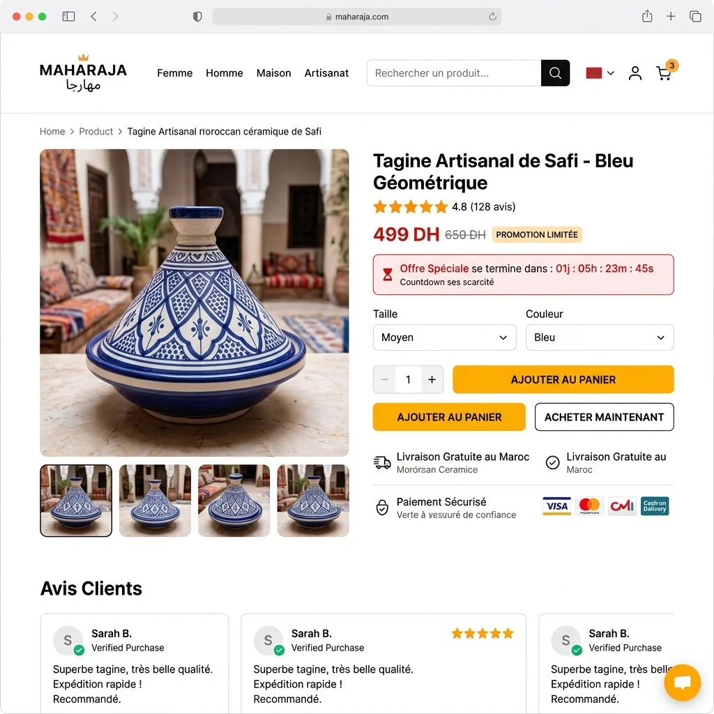

Pourquoi le CRO est crucial pour les e-commerçants marocains
Le marché du e-commerce au Maroc connaît une croissance rapide, mais la concurrence est féroce. Optimiser votre taux de conversion vous permet de vous démarquer sans augmenter votre budget publicitaire. Cet article vous guide à travers les stratégies CRO spécifiques au contexte local.

Comprendre le comportement des consommateurs marocains
Préférences de paiement
Au Maroc, le paiement à la livraison (COD) reste très populaire. Proposez cette option pour rassurer vos clients. Intégrez également les solutions locales comme CMI et Maroc Telecommerce.
Quieres aplicar estas estrategias sin esfuerzo? Nuestros expertos de DatRey se encargan.
Fidélité et confiance
Les Marocains accordent une grande importance à la confiance. Affichez des avis vérifiés, des garanties de satisfaction et un service client réactif en darija ou en français.
Stratégies CRO adaptées au marché marocain
1. Optimisation mobile-first
La majorité des achats en ligne au Maroc se font via smartphone. Assurez-vous que votre site est parfaitement responsive et que le processus de commande est fluide sur mobile.
2. Pages produits détaillées
Incluez des photos de qualité, des descriptions précises en français et en arabe, et des vidéos de démonstration. Plus le client est informé, plus il est susceptible d'acheter.
3. Offres promotionnelles locales
Créez des offres spéciales pour les fêtes marocaines (Aïd, Ramadan, etc.). Utilisez des compteurs de temps pour créer l'urgence.

Outils CRO recommandés pour les e-commerçants
- Google Analytics : pour analyser le comportement des utilisateurs.
- Hotjar : pour les heatmaps et les enregistrements de sessions.
- Optimizely : pour les tests A/B.
- Trustpilot : pour collecter et afficher les avis clients.
- Prestashop / WooCommerce : plugins CRO comme "One Page Checkout".
Étude de cas : augmentation de 40% des conversions
Une boutique de vêtements à Casablanca a mis en place les stratégies suivantes : ajout du paiement à la livraison, simplification du checkout, et affichage de témoignages. Résultat : le taux de conversion est passé de 1,2% à 1,7% en trois mois.
Conclusion
Le CRO est un investissement rentable pour tout e-commerçant marocain. En adaptant vos stratégies au marché local et en utilisant les bons outils, vous pouvez significativement augmenter vos ventes.